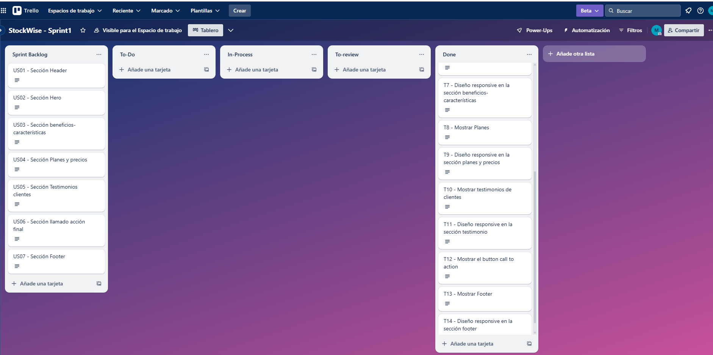
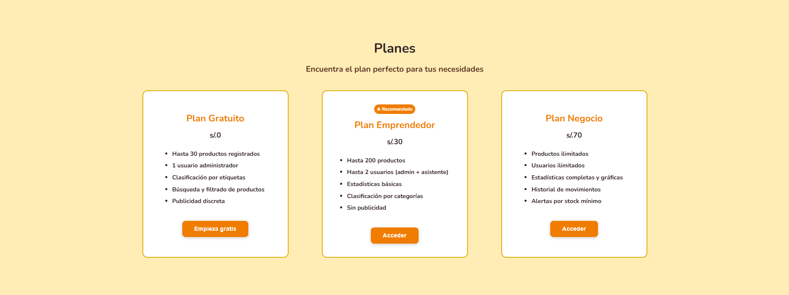
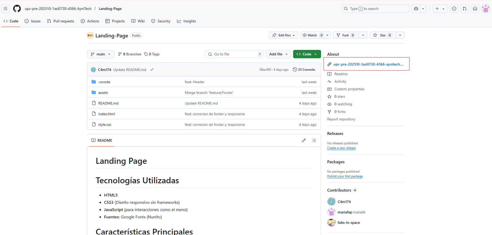
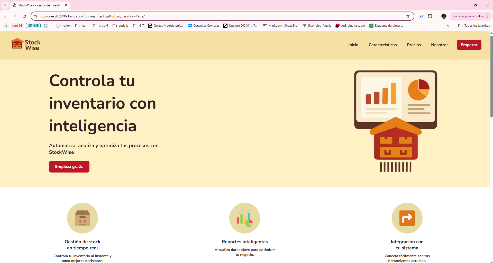
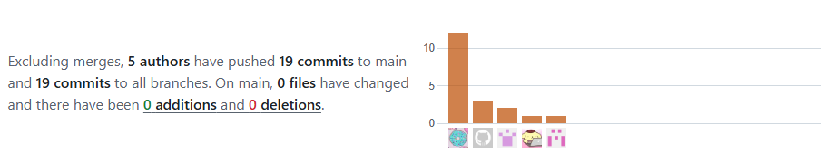

Ingeniería de Software - 2025-1
Aplicaciones Web - 4366
Profesor: Alex Humberto Sánchez Ponce
Informe del Trabajo Final
Universidad Peruana de Ciencias Aplicadas

Ingeniería de Software - 2025-1
Aplicaciones Web - 4366
Profesor: Alex Humberto Sánchez Ponce
Informe del Trabajo Final
Startup: AyniTech
Producto:
| Member | Code |
|---|---|
| Jocelyn Damaly Almerco Rojas | U20221g068 |
| Sanchez Rios, Camila Cristina | U202210973 |
| Henry Kalet Esteban Roman | U202310210 |
| Maria Fernanda Peña Riofrio | U202113279 |
| Fabiola Del Rocio Saldaña Ayala | U202313773 |
Abril, 2025
| Versión | Fecha | Autor | Descripción de modificaciones |
|---|---|---|---|
| TB1 | 07/04/2025 |
|
|
Link de repositorio del reporte:: https://github.com/upc-pre-202510-1asi0730-4366-AyniTech/Report
Capítulo II: Requirements Elicitation & Analysis
Capítulo III: Requirements Specification
Capítulo V: Product Implementation, Validation & Deployment
ABET – EAC - Student Outcome 5
Criterio: La capacidad de funcionar efectivamente en un equipo cuyos miembros juntos proporcionan liderazgo, crean un entorno de colaboración e inclusivo, establecen objetivos, planifican tareas y cumplen objetivos.
| Criterio específico | Acciones realizadas | Conclusiones |
| Comunica oralmente con efectividad a diferentes rangos de audiencia. |
name TB1: .. TP1: ,.. TB2: . TF: . name TB1: TP1: TB2: TF: . name TB1:
TP1: . TB2: TF: .
TB1: TP1: TB2: TF: |
TB1: TP1: . TB2: TF: |
| Comunica por escrito con efectividad a diferentes rangos de audiencia. |
name TB1: .. TP1: .. TB2: .. TF: .. name TB1: .. TP1: .. TB2: ... TF: . name TB1: .. TP1: .. TB2: ... TF: . name TB1: ... TP1: ... TB2: ... TF: ... |
TB1: .. TP1: ... TB2: .. TF: ... |
En la siguiente sección se describe la ruta de referencia de cada uno de los productos de software para que cualquier miembro del equipo pueda desarrollar cada punto del trabajo.
Software Deployment
El proyecto seguirá las convenciones de flujo de trabajo establecidas por el modelo GitFlow para el control de versiones, utilizando GitHub como plataforma y sistema de control de versiones. A continuación, se detallará cómo se implementará GitFlow como Workflow de control de versiones, además de proporcionar los URL de los repositorios de GitHub para cada producto: Landing Page, Web Services y Frontend Web Applications.
GitFlow
Estructura de branches (Ramas):
1. Master branch (Rama principal): Esta rama será considerada como la principal para la aplicación, y contendrá versiones estables y finales del desarrollo. Solo se permitirán cambios que hayan sido previamente probados y verificados en otras ramas de prueba.
2. Develop branch (Rama de desarrollo): El propósito de esta rama es llevar a cabo los avances del proyecto en equipo y de mantener los archivos centrales del desarrollo continuo.
3. Feature branches (Ramas de funcionalidad): Cada funcionalidad desarrollada por el equipo o separada del enfoque actual del desarrollo tendrá su propia rama. Una vez que una funcionalidad esté completamente trabajada, se fusionará con la rama de desarrollo del proyecto. Las convenciones para nombrar las ramas de funcionalidad seguirán un patrón descriptivo y único, por ejemplo, "feature/nombre-de-la-funcionalidad".
4. Release branches (Ramas de lanzamiento): Estas ramas se utilizarán para mantener una instancia de la rama develop que esté próxima a ser incluida en la rama principal. Se seguirá el sistema de versionamiento semántico (Semantic Versioning) para nombrar las Releases.
Versionamiento Semántico: Para nombrar las Releases, se aplicará el sistema de versionamiento semántico (Semantic Versioning 2.0.0).
Convenciones de Commits: Para los mensajes de los commits realizados, se utilizará la especificación Conventional Commits basada en Angular Commit Guidelines. La estructura a seguir será la siguiente:
git commit -m "<type>[optional scope]:<title>" -m"<description>"
HTML: Algunas de las prácticas que deben de seguirse para alcanzar un código coherente, sostenible y ordenado son las siguientes:
<p>Esto es un párrafo.</p>
A pesar de que HTML permite combinar mayúsculas y minúsculas en los nombres de los elementos y atributos, se limitará al uso de minúsculas para mantener el orden y garantizar la legibilidad.
Utilizar comillas en caso de que los atributos contengan espacios entre sí.
Procurar especificar el texto alt y las dimensiones width y height de las imágenes, ya que de esta manera se facilitará la disponibilidad del contenido. Por ejemplo:
<img src="abc.img" alt="image name"
style="width:128px;height:128px">
CSS: Entre las prácticas empleadas se mencionan:
Los nombres de las clases deben de ser breves y autodescriptivos.
Separar los nombres de las clases y ID con un guión. Por ejemplo:
#video-id .hero-shadow
Evitar especificar la unidad de medida luego de usar el valor 0.
Separar las declaraciones y selectores en nuevas líneas para agilizar la legibilidad.
Landing Page
Para poder desplegar la Landing Page resulta necesario contar con una serie de requisitos, entre ellos, es necesario contar con una cuenta personal, una organización y un repositorio al cual cargar los documentos. A partir de lo anterior, es posible comenzar el despliegue de la landing page. A continuación se enuncian los pasos a seguir:
Crear un repositorio para alojar el Landing Page.
Asegurarse de que los archivos sigan las nomenclaturas "index.html", para el contenido de la landing page; "style.css" para los estilos. Se tendra una carpeta "assets" y dentro estaran las carpetas "img".
Cargar los archivos al repositorio mediante un commit.
Dirigirse a Settings > Pages y seleccionar la branch correspondiente dentro de la cual se encuentra el proyecto, generalmente se trata de "main" o "master".
Esperar a que GitHub realice las comprobaciones necesarias. Una vez culminado el proceso, se obtendrá un enlace que llevará al Landing Page desplegado.
En esta sección se explica y evidencia el proceso de implementación, pruebas, documentación y despliegue del Landing Page, Web Services y Frontend Web Applications.
En este apartado se presenta un resumen del progreso obtenido durante el Sprint 1, dedicado a la construcción de la Landing Page. Incluye los logros en diseño, programación y features desarrollados, junto con la gestión del equipo: comunicación, herramientas y planificación. También se puede observar el Sprint backlog, evidencias del trabajo y documentación de servicios.
En el Sprint Planning 1, se muestran evidencias de la planeación y creación del landing page, incluyendo avances del proyecto como colaboración en equipo que se registran en GitHub.
| Sprint # | 1 |
|---|---|
| Sprint Planning Background | |
| Date | 17/04/2025 |
| Time | 8:30 pm |
| Location | Modalidad remota |
| Prepared By | Henry Esteban |
| Attendees (to planning meeting) | Jocelyn Almerco, Camila Sanchez, Maria Fernanda Peña, Fabiola Del Rocio Saldaña, Henry Esteban |
| Sprint 0 Review Summary | Para esta entrega no hay un Sprint anterior por ende no hay un resumen del Sprint |
| Sprint 0 Retrospective Summary | Para esta entrega no hay un Sprint anterior por ende no hay un resumen del Sprint |
| Sprint Goal & User Stories | |
| Sprint Goal 1 | En este sprint se tiene como objetivo, realizar la landing page con HTML y CSS. Anticipadamente, en otras previas reuniones se coordinó en equipo, el contenido y diseño de la landing page,el cual se realizó en Figma. Una vez realizado el sprint, la landing debe estar desplegada en GitHub Pages para que los usuarios puedan acceder a través del link a está misma. |
| Sprint Velocity 1 | 18 |
| Sum of Story Points | 18 |
Para lograr una distribución eficiente del trabajo y mayor claridad en las responsabilidades, se identificaron 4 áreas claves: Diseño UX/UI, Landing Page, Deploy y Documentation, La asignación se basó en experiencia y carga equilibrada. La tabla detalla los roles por área, leader (L) y collaborator(C):
| Team Member | GitHub Username | Diseño UX/UI | Landing Page | Deploy | Documentation |
|---|---|---|---|---|---|
| Almerco Rojas, Jocelyn Damaly | JocyDam | L | C | C | C |
| Saldaña Ayala, Fabiola del Rocio | fabs-in-space | C | L | C | C |
| Sánchez Ríos, Camila Cristina | C4m174 | C | C | L | C |
| Peña Riofrio, Maria Fernanda | mariafep | C | C | C | C |
| Esteban Román, Henry Kalet | Kalet123-commit | C | C | C | L |
En esta parte mostramos las tareas que se realizaron en este sprint.
Link del Trello: Trello
Vista del Sprint Backlog en Trello:

| Sprint # | 1 | ||||||
|---|---|---|---|---|---|---|---|
| User Story | Work-Item /Task | ||||||
| Id | Title | Id | Title | Description | Estimation(Hours) | Assigned To | Status (To-do / InProcess / ToReview / Done) |
| US01 | Sección Header | T1 | Interacción de la barra de navegación | Añadir funcionalidades a la barra de navegaciones | 0.5h | Camila Sanchez | Done |
| US01 | Sección Header | T2 | Diseño responsive en la barra de navegación | Implementar diseño responsive a la barra de navegación | 1h | Camila Sanchez | Done |
| US01 | Sección Header | T3 | Función sticky en la barra de navegación | Aplicar la funcionalidad de que la barra de navegación se desplace por toda la landing | 0.5h | Camila Sanchez | Done |
| US02 | Sección Hero | T4 | Mostrar Hero Section | Implementar un hero section | 1h | Camila Sanchez | Done |
| US02 | Sección Hero | T5 | Diseño responsive en el hero section | Implementar un diseño responsivo a la sección hero | 0.5h | Camila Sanchez | Done |
| US03 | Sección beneficios-características | T6 | Mostrar beneficios-características | Añadir cuadros de texto sobre la características del servicio | 1h | Maria Fernanda Peña | Done |
| US03 | Sección beneficios-características | T7 | Diseño responsive en la sección beneficios-características | Implementar un diseño responsivo en la sección beneficios-características | 0.5h | Maria Fernanda Peña | Done |
| US04 | Sección Planes y precios | T8 | Mostrar Planes | Añadir los planes establecidos y sus descripciones con precios | 1.5h | Fabiola Saldaña | Done |
| US04 | Sección Planes y precios | T9 | Diseño responsive en la sección planes y precios | Aplicar un diseño responsivo en la sección planes y precios | 0.5h | Fabiola Saldaña | Done |
| US05 | Sección Testimonios clientes | T10 | Mostrar testimonios de clientes | Añadir los testimonios de clientes | 1h | Jocelyn Almerco | Done |
| US05 | Sección Testimonios clientes | T11 | Diseño responsive en la sección testimonio | Aplicar un diseño responsivo en la sección testimonios-clientes | 0.5h | Jocelyn Almerco | Done |
| US06 | Sección llamado acción final | T12 | Mostrar el button call to action | Añadir enlace al botón call to action a la aplicación web | 0.5h | Maria Fernanda Peña | Done |
| US07 | Sección Footer | T13 | Mostrar Footer | Implementar la sección Footer | 0.5h | Henry Esteban | Done |
| US07 | Sección Footer | T14 | Diseño responsive en la sección footer | Aplicar un diseño responsivo en la sección footer | 0.5h | Henry Esteban | Done |
| Repository | Branch | Commit Id | Commit Message | Commit Message Body | Commited on (Date) |
|---|---|---|---|---|---|
| upc-pre-202510-1asi0730-4366-AyniTech/Landing-Page | feature/Beneficios-Características | 6b36a6919a2e91c77ff3baff566fd60e043c1395 | Primer commit con README | Primer commit con README | 16/04/2025 |
| feature/Beneficios-Características | 3f32cf3d2d04b57948f74499f6bcc0c9524c3446 | feat: beneficios-caracteristicas | feat: beneficios-caracteristicas | 19/04/2025 | |
| feature/Footer | 4c5ca5c622581ac3cee863d0e4219ac287e231df | Footer Landing page | Footer Landing page | 17/04/2025 | |
| feature/Footer | 235e77f6d3b97ccb4b7e0340502f7c3ed1c367e8 | Corrección | Corrección | 17/04/2025 | |
| feature/Footer | ea09d7b9f1ffca7b8d28a5a478a9ce146dcf78ed | Corrección footer implementación de html y css | Corrección footer implementación de html y css | 17/04/2025 | |
| feature/Header | 046034c41d59af333c0d1b15f06bf8829586fe7d | feat:Header | feat:Header | 16/04/2025 | |
| feature/Hero-Section | fe076a40ec497b89907b1a5f0e812c04ad439d2b | feat: hero - section | feat: hero - section | 16/04/2025 | |
| feature/Llamado-Accion-Final | 89ca26e0e4498cd8dbd986ca117b416fe3571c74 | feat: llamado acción | feat: llamado acción | 19/04/2025 | |
| feature/Planes-Precios | 36379aacd31c276220ea903783afa86f6c5aac67 | Precios landing | Precios landing | 19/04/2025 | |
| feature/Testimonios-Clientes | 5cf271c1711d25c79dd6700098e4b40e56089162 | feat: Primera versión del código - Testimonios clientes | feat: Primera versión del código - Testimonios clientes | 18/04/2025 |
En este Sprint se realizó nuestra landing page utilizando HTML y CSS con su respectivo despliegue en GitHub Pages. En esta sección se muestran los diferentes apartados que se han implementado en el trabajo:
Sección beneficios y características

Sección Planes y precios 
Seccion Testimonios Clientes

Y aque este sprint fue el primero y solamente se desarrolló la landing page, por lo que no se evidencia el empleo de web service
Para la entrega del Sprint 1, se desplegó el landing page de forma completa. Para esto se siguió un proceso que es el siguiente:
Si nos vamos al github, vemos en la parte marcada con roja el link de nuestra landing page 
Entrando a link se puede correctamente la landing page de stock wise 
| Alumno | Actividad |
|---|---|
| Jocelyn Damaly Almerco Rojas | Implementación de las sección Testimonios-Clientes |
| Sanchez Rios, Camila Cristina | Implementación de la sección header y sección hero-section |
| Henry Kalet Esteban Roman | Implementación de la sección footer |
| Maria Fernanda Peña Riofrio | Implementación de la sección beneficios-características y llamado-acción-final |
| Fabiola Del Rocio Saldaña Ayala | Implementación de la sección planes-precios |
Commits del landing page 